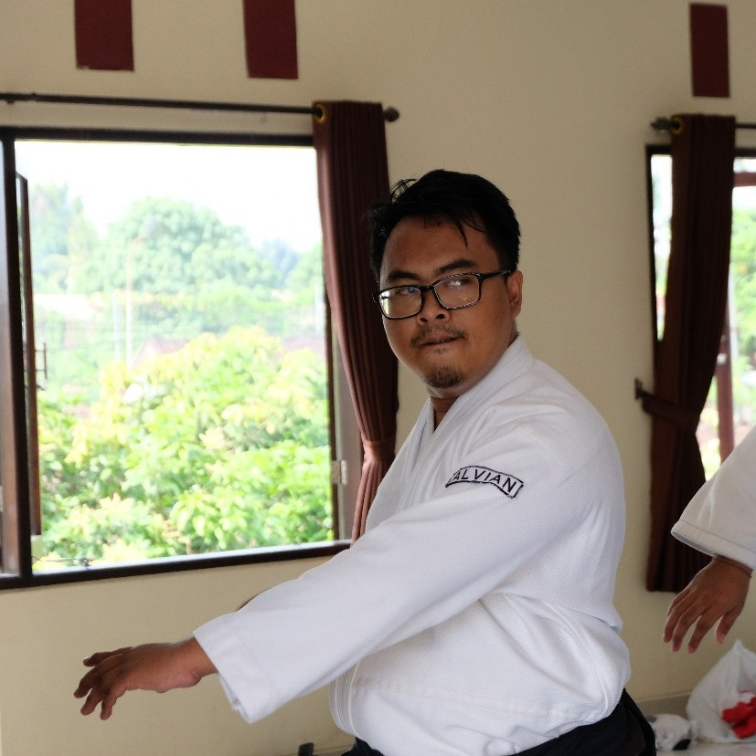
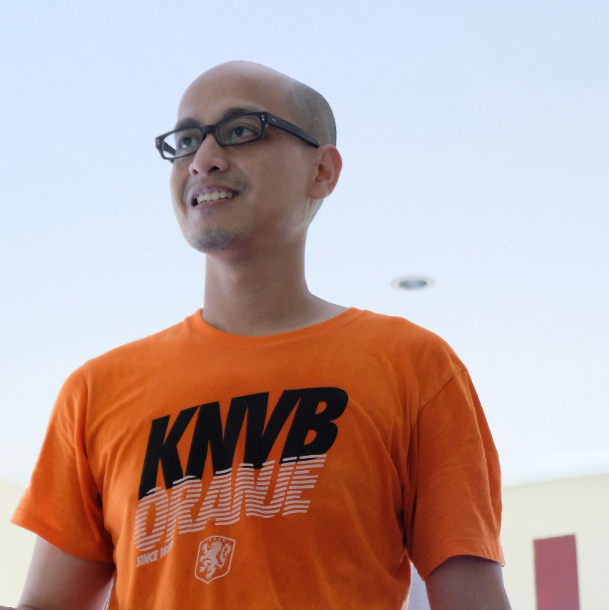

Para Instruktur

Alvian Zachry Faturrahman
Kepala ProgramMemiliki pengalaman beladiri di Shotokan Karatedo, Shorinjiryu Karatedo, Aikido, Jujutsu, Judo, Sambo, serta telah mengisi seminar-seminar di beberapa kota di Indonesia. Penggagas Budo Academy dan Sekretaris Jenderal PB Koshiki Indonesia

I Ketut Catur Ramadhan
Aikido Chief InstructorAdalah Sekretaris Jenderal PB Aikido Kiryokukai Indonesia. Memiliki pengalaman Aikido yang luas, serta telah berlatih bersama kepala aliran Aikido saat ini, Moriteru Ueshiba di dojo pusat Aikido di Jepang.

Bianca Belinda Muhammad
Asisten PengajarMemiliki latar belakang beladiri di Karate, Aikido, dan Jujutsu.